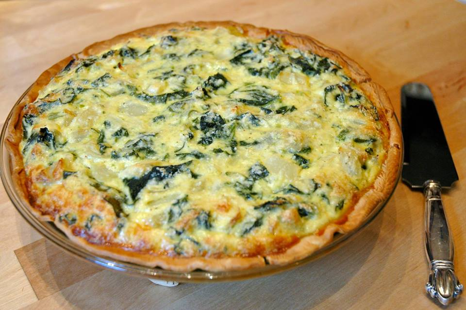

Rețetă tartă cu spanac și feta

Descriere
Delicate și pline de prospețime, aceste tarte cu spanac și feta sunt o
alegere delicioasă pentru o masă ușoară și elegantă. Umplutura bogată de
spanac, combinată cu brânza feta sărată și textura crocantă a aluatului,
creează o explozie de gusturi în fiecare mușcătură. Perfecte pentru o cină
alături de cei dragi sau pentru un brunch însorit în grădină.
Ingrediente
Ingrediente pentru aluat
- 250g făină
- 125g unt rece, tăiat cubulețe
- Un praf de sare
- 3-4 linguri apă rece
Ingrediente pentru umplutură
- 300g spanac proaspăt sau congelat, tocat
- 150g brânză feta, sfărâmată
- 1 ceapă mică, tocată fin
- 2 căței de usturoi, mărunțiți
- 2 ouă
- 150ml smântână lichidă
- Sare și piper negru proaspăt măcinat, după gust
Pași pentru preparare
-
Pentru aluat, amestecă făina cu untul și sarea până obții un amestec
mărmuros. Adaugă apă rece, câte o lingură la rând, până când aluatul se
leagă.
-
Înfășoară aluatul în folie alimentară și lasă-l să se odihnească în
frigider timp de cel puțin 30 de minute.
-
Între timp, pregătește umplutura: călește ceapa și usturoiul în puțin
ulei de măsline până devin moi, apoi adaugă spanacul și gătește-l până
se înmoaie și își reduce volumul. Lasă-l să se răcească puțin.
-
Într-un castron, amestecă ouăle cu smântâna lichidă. Adaugă brânza feta
sfărâmată și spanacul călit. Condimentează cu sare și piper după gust.
-
Întinde aluatul și taie-l în cercuri cu un diametru mai mare decât cel
al formelor pentru tarte. Așază aluatul în formele pentru tarte și
presează-l ușor. Taie excesul de aluat de pe margini.
- Toarnă amestecul de spanac și feta în formele pregătite.
-
Coace tartele în cuptorul preîncălzit la 180°C timp de aproximativ 25-30
de minute sau până când aluatul este auriu și umplutura este coaptă.
-
Servește tarte calde sau reci, alături de o salată proaspătă de sezon.